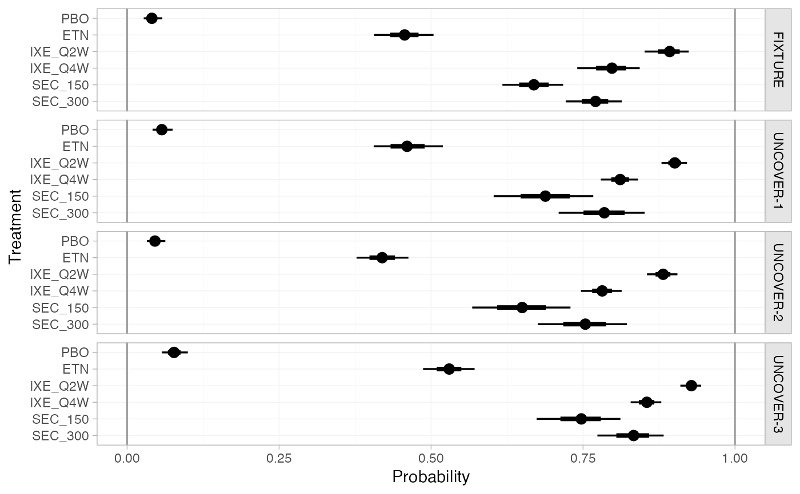
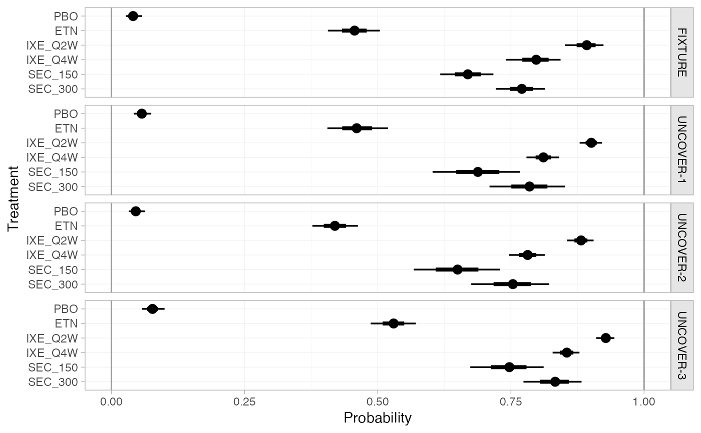

Obtain predictions of absolute effects from NMA models fitted with nma().
For example, if a model is fitted to binary data with a logit link, predicted
outcome probabilities or log odds can be produced. For survival models,
predictions can be made for survival probabilities, (cumulative) hazards,
(restricted) mean survival times, and quantiles including median survival
times.
When an IPD NMA or ML-NMR model has been fitted, predictions can be
produced either at an individual level or at an aggregate level.
Aggregate-level predictions are population-average absolute effects; these
are marginalised or standardised over a population. For example, average
event probabilities from a logistic regression, or marginal (standardised)
survival probabilities from a survival model.
Usage
# S3 method for stan_nma
predict(
object,
...,
baseline = NULL,
newdata = NULL,
study = NULL,
trt_ref = NULL,
type = c("link", "response"),
level = c("aggregate", "individual"),
baseline_type = c("link", "response"),
baseline_level = c("individual", "aggregate"),
probs = c(0.025, 0.25, 0.5, 0.75, 0.975),
predictive_distribution = FALSE,
summary = TRUE
)
# S3 method for stan_nma_surv
predict(
object,
times = NULL,
...,
baseline = NULL,
aux = NULL,
newdata = NULL,
study = NULL,
trt_ref = NULL,
type = c("survival", "hazard", "cumhaz", "mean", "median", "quantile", "rmst", "link"),
quantiles = c(0.25, 0.5, 0.75),
level = c("aggregate", "individual"),
times_seq = NULL,
probs = c(0.025, 0.25, 0.5, 0.75, 0.975),
predictive_distribution = FALSE,
summary = TRUE
)Arguments
- object
A
stan_nmaobject created bynma().- ...
Additional arguments, passed to
uniroot()for regression models ifbaseline_level = "aggregate".- baseline
An optional
distr()distribution for the baseline response (i.e. intercept), about which to produce absolute effects. Can also be a character string naming a study in the network to take the estimated baseline response distribution from. IfNULL, predictions are produced using the baseline response for each study in the network with IPD or arm-based AgD.For regression models, this may be a list of
distr()distributions (or study names in the network to use the baseline distributions from) of the same length as the number of studies innewdata, possibly named by the studies innewdataor otherwise in order of appearance innewdata.Use the
baseline_typeandbaseline_levelarguments to specify whether this distribution is on the response or linear predictor scale, and (for ML-NMR or models including IPD) whether this applies to an individual at the reference level of the covariates or over the entirenewdatapopulation, respectively. For example, in a model with a logit link withbaseline_type = "link", this would be a distribution for the baseline log odds of an event. For survival models,baselinealways corresponds to the intercept parameters in the linear predictor (i.e.baseline_typeis always"link", andbaseline_levelis"individual"for IPD NMA or ML-NMR, and"aggregate"for AgD NMA).Use the
trt_refargument to specify which treatment this distribution applies to.- newdata
Only required if a regression model is fitted and
baselineis specified. A data frame of covariate details, for which to produce predictions. Column names must match variables in the regression model.If
level = "aggregate"this should either be a data frame with integration points as produced byadd_integration()(one row per study), or a data frame with individual covariate values (one row per individual) which are summarised over.If
level = "individual"this should be a data frame of individual covariate values, one row per individual.If
NULL, predictions are produced for all studies with IPD and/or arm-based AgD in the network, depending on the value oflevel.- study
Column of
newdatawhich specifies study names or IDs. When not specified: ifnewdatacontains integration points produced byadd_integration(), studies will be labelled sequentially by row; otherwise data will be assumed to come from a single study.- trt_ref
Treatment to which the
baselineresponse distribution refers, ifbaselineis specified. By default, the baseline response distribution will refer to the network reference treatment. Coerced to character string.- type
Whether to produce predictions on the
"link"scale (the default, e.g. log odds) or"response"scale (e.g. probabilities).For survival models, the options are
"survival"for survival probabilities (the default),"hazard"for hazards,"cumhaz"for cumulative hazards,"mean"for mean survival times,"quantile"for quantiles of the survival time distribution,"median"for median survival times (equivalent totype = "quantile"withquantiles = 0.5),"rmst"for restricted mean survival times, or"link"for the linear predictor. Fortype = "survival","hazard"or"cumhaz", predictions are given at the times specified bytimesor at the event/censoring times in the network iftimes = NULL. Fortype = "rmst", the restricted time horizon is specified bytimes, or iftimes = NULLthe earliest last follow-up time amongst the studies in the network is used. Whenlevel = "aggregate", these all correspond to the standardised survival function (see details).- level
The level at which predictions are produced, either
"aggregate"(the default), or"individual". Ifbaselineis not specified, predictions are produced for all IPD studies in the network iflevelis"individual"or"aggregate", and for all arm-based AgD studies in the network iflevelis"aggregate".- baseline_type
When a
baselinedistribution is given, specifies whether this corresponds to the"link"scale (the default, e.g. log odds) or"response"scale (e.g. probabilities). For survival models,baselinealways corresponds to the intercept parameters in the linear predictor (i.e.baseline_typeis always"link").- baseline_level
When a
baselinedistribution is given, specifies whether this corresponds to an individual at the reference level of the covariates ("individual", the default), or from an (unadjusted) average outcome on the reference treatment in thenewdatapopulation ("aggregate"). Ignored for AgD NMA, since the only option is"aggregate"in this instance. For survival models,baselinealways corresponds to the intercept parameters in the linear predictor (i.e.baseline_levelis"individual"for IPD NMA or ML-NMR, and"aggregate"for AgD NMA).- probs
Numeric vector of quantiles of interest to present in computed summary, default
c(0.025, 0.25, 0.5, 0.75, 0.975)- predictive_distribution
Logical, when a random effects model has been fitted, should the predictive distribution for absolute effects in a new study be returned? Default
FALSE.- summary
Logical, calculate posterior summaries? Default
TRUE.- times
A numeric vector of times to evaluate predictions at. Alternatively, if
newdatais specified,timescan be the name of a column innewdatawhich contains the times. IfNULL(the default) then predictions are made at the event/censoring times from the studies included in the network (or according totimes_seq). Only used iftypeis"survival","hazard","cumhaz"or"rmst".- aux
An optional
distr()distribution for the auxiliary parameter(s) in the baseline hazard (e.g. shapes). Can also be a character string naming a study in the network to take the estimated auxiliary parameter distribution from. IfNULL, predictions are produced using the parameter estimates for each study in the network with IPD or arm-based AgD.For regression models, this may be a list of
distr()distributions (or study names in the network to use the auxiliary parameters from) of the same length as the number of studies innewdata, possibly named by the study names or otherwise in order of appearance innewdata.- quantiles
A numeric vector of quantiles of the survival time distribution to produce estimates for when
type = "quantile".- times_seq
A positive integer, when specified evaluate predictions at this many evenly-spaced event times between 0 and the latest follow-up time in each study, instead of every observed event/censoring time. Only used if
newdata = NULLandtypeis"survival","hazard"or"cumhaz". This can be useful for plotting survival or (cumulative) hazard curves, where prediction at every observed even/censoring time is unnecessary and can be slow. When a call from withinplot()is detected, e.g. likeplot(predict(fit, type = "survival")),times_seqwill default to 50.
Value
A nma_summary object if summary = TRUE, otherwise a list
containing a 3D MCMC array of samples and (for regression models) a data
frame of study information.
Aggregate-level predictions from IPD NMA and ML-NMR models
Population-average absolute effects can be produced from IPD NMA and ML-NMR
models with level = "aggregate". Predictions are averaged over the target
population (i.e. standardised/marginalised), either by (numerical)
integration over the joint covariate distribution (for AgD studies in the
network for ML-NMR, or AgD newdata with integration points created by
add_integration()), or by averaging predictions for a sample of individuals
(for IPD studies in the network for IPD NMA/ML-NMR, or IPD newdata).
For example, with a binary outcome, the population-average event probabilities on treatment \(k\) in study/population \(j\) are $$\bar{p}_{jk} = \int_\mathfrak{X} p_{jk}(\mathbf{x}) f_{jk}(\mathbf{x}) d\mathbf{x}$$ for a joint covariate distribution \(f_{jk}(\mathbf{x})\) with support \(\mathfrak{X}\) or $$\bar{p}_{jk} = \sum_i p_{jk}(\mathbf{x}_i)$$ for a sample of individuals with covariates \(\mathbf{x}_i\).
Population-average absolute predictions follow similarly for other types of outcomes, however for survival outcomes there are specific considerations.
Standardised survival predictions
Different types of population-average survival predictions, often called
standardised survival predictions, follow from the standardised survival
function created by integrating (or equivalently averaging) the
individual-level survival functions at each time \(t\):
$$\bar{S}_{jk}(t) = \int_\mathfrak{X} S_{jk}(t | \mathbf{x}) f_{jk}(\mathbf{x})
d\mathbf{x}$$
which is itself produced using type = "survival".
The standardised hazard function corresponding to this standardised
survival function is a weighted average of the individual-level hazard
functions
$$\bar{h}_{jk}(t) = \frac{\int_\mathfrak{X} S_{jk}(t | \mathbf{x}) h_{jk}(t | \mathbf{x}) f_{jk}(\mathbf{x})
d\mathbf{x} }{\bar{S}_{jk}(t)}$$
weighted by the probability of surviving to time \(t\). This is produced
using type = "hazard".
The corresponding standardised cumulative hazard function is
$$\bar{H}_{jk}(t) = -\log(\bar{S}_{jk}(t))$$
and is produced using type = "cumhaz".
Quantiles and medians of the standardised survival times are found by
solving
$$\bar{S}_{jk}(t) = 1-\alpha$$
for the \(\alpha\%\) quantile, using numerical root finding. These are
produced using type = "quantile" or "median".
(Restricted) means of the standardised survival times are found by
integrating
$$\mathrm{RMST}_{jk}(t^*) = \int_0^{t^*} \bar{S}_{jk}(t) dt$$
up to the restricted time horizon \(t^*\), with \(t^*=\infty\) for mean
standardised survival time. These are produced using type = "rmst" or
"mean".
See also
plot.nma_summary() for plotting the predictions.
Examples
## Smoking cessation
# \donttest{
# Run smoking RE NMA example if not already available
if (!exists("smk_fit_RE")) example("example_smk_re", run.donttest = TRUE)
# }
# \donttest{
# Predicted log odds of success in each study in the network
predict(smk_fit_RE)
#> ---------------------------------------------------------------------- Study: 1 ----
#>
#> mean sd 2.5% 25% 50% 75% 97.5%
#> pred[1: No intervention] -2.78 0.32 -3.46 -2.99 -2.77 -2.56 -2.19
#> pred[1: Group counselling] -1.68 0.50 -2.66 -2.00 -1.68 -1.36 -0.69
#> pred[1: Individual counselling] -1.94 0.37 -2.69 -2.18 -1.94 -1.70 -1.23
#> pred[1: Self-help] -2.30 0.49 -3.25 -2.62 -2.30 -1.96 -1.31
#> Bulk_ESS Tail_ESS Rhat
#> pred[1: No intervention] 5073 2698 1
#> pred[1: Group counselling] 2514 2686 1
#> pred[1: Individual counselling] 2989 2929 1
#> pred[1: Self-help] 2647 2523 1
#>
#> ---------------------------------------------------------------------- Study: 2 ----
#>
#> mean sd 2.5% 25% 50% 75% 97.5%
#> pred[2: No intervention] -2.60 0.74 -4.13 -3.06 -2.59 -2.11 -1.17
#> pred[2: Group counselling] -1.49 0.75 -2.96 -1.98 -1.50 -1.01 -0.01
#> pred[2: Individual counselling] -1.76 0.73 -3.23 -2.24 -1.75 -1.28 -0.32
#> pred[2: Self-help] -2.11 0.75 -3.59 -2.59 -2.12 -1.62 -0.60
#> Bulk_ESS Tail_ESS Rhat
#> pred[2: No intervention] 2505 2685 1
#> pred[2: Group counselling] 2862 3241 1
#> pred[2: Individual counselling] 2727 2834 1
#> pred[2: Self-help] 3507 2960 1
#>
#> ---------------------------------------------------------------------- Study: 3 ----
#>
#> mean sd 2.5% 25% 50% 75% 97.5%
#> pred[3: No intervention] -2.14 0.12 -2.38 -2.22 -2.14 -2.06 -1.92
#> pred[3: Group counselling] -1.04 0.44 -1.89 -1.33 -1.05 -0.75 -0.17
#> pred[3: Individual counselling] -1.30 0.26 -1.81 -1.47 -1.31 -1.14 -0.78
#> pred[3: Self-help] -1.65 0.42 -2.49 -1.92 -1.66 -1.39 -0.81
#> Bulk_ESS Tail_ESS Rhat
#> pred[3: No intervention] 6809 2769 1
#> pred[3: Group counselling] 2063 2837 1
#> pred[3: Individual counselling] 1686 2016 1
#> pred[3: Self-help] 2086 2267 1
#>
#> ---------------------------------------------------------------------- Study: 4 ----
#>
#> mean sd 2.5% 25% 50% 75% 97.5%
#> pred[4: No intervention] -4.04 0.56 -5.26 -4.39 -4.00 -3.66 -3.04
#> pred[4: Group counselling] -2.93 0.68 -4.38 -3.37 -2.92 -2.47 -1.64
#> pred[4: Individual counselling] -3.20 0.58 -4.44 -3.57 -3.17 -2.80 -2.12
#> pred[4: Self-help] -3.55 0.68 -4.96 -3.98 -3.53 -3.09 -2.26
#> Bulk_ESS Tail_ESS Rhat
#> pred[4: No intervention] 3913 2731 1
#> pred[4: Group counselling] 2943 2830 1
#> pred[4: Individual counselling] 3442 2506 1
#> pred[4: Self-help] 3147 2786 1
#>
#> ---------------------------------------------------------------------- Study: 5 ----
#>
#> mean sd 2.5% 25% 50% 75% 97.5%
#> pred[5: No intervention] -2.16 0.14 -2.43 -2.25 -2.15 -2.06 -1.90
#> pred[5: Group counselling] -1.05 0.45 -1.93 -1.36 -1.07 -0.75 -0.14
#> pred[5: Individual counselling] -1.32 0.27 -1.83 -1.50 -1.32 -1.14 -0.75
#> pred[5: Self-help] -1.67 0.42 -2.50 -1.94 -1.68 -1.40 -0.84
#> Bulk_ESS Tail_ESS Rhat
#> pred[5: No intervention] 6720 2971 1
#> pred[5: Group counselling] 2110 2364 1
#> pred[5: Individual counselling] 1757 1967 1
#> pred[5: Self-help] 2020 2340 1
#>
#> ---------------------------------------------------------------------- Study: 6 ----
#>
#> mean sd 2.5% 25% 50% 75% 97.5%
#> pred[6: No intervention] -3.42 0.72 -4.94 -3.87 -3.36 -2.91 -2.18
#> pred[6: Group counselling] -2.31 0.80 -4.07 -2.81 -2.26 -1.76 -0.83
#> pred[6: Individual counselling] -2.58 0.71 -4.08 -3.02 -2.54 -2.09 -1.32
#> pred[6: Self-help] -2.93 0.80 -4.61 -3.44 -2.88 -2.39 -1.50
#> Bulk_ESS Tail_ESS Rhat
#> pred[6: No intervention] 3343 2369 1
#> pred[6: Group counselling] 3062 2603 1
#> pred[6: Individual counselling] 3369 2643 1
#> pred[6: Self-help] 2925 2503 1
#>
#> ---------------------------------------------------------------------- Study: 7 ----
#>
#> mean sd 2.5% 25% 50% 75% 97.5%
#> pred[7: No intervention] -3.03 0.44 -4.00 -3.30 -2.99 -2.72 -2.23
#> pred[7: Group counselling] -1.92 0.59 -3.15 -2.30 -1.91 -1.52 -0.79
#> pred[7: Individual counselling] -2.19 0.47 -3.19 -2.48 -2.17 -1.86 -1.35
#> pred[7: Self-help] -2.54 0.58 -3.79 -2.89 -2.51 -2.14 -1.48
#> Bulk_ESS Tail_ESS Rhat
#> pred[7: No intervention] 3844 2353 1
#> pred[7: Group counselling] 3063 2509 1
#> pred[7: Individual counselling] 3130 2470 1
#> pred[7: Self-help] 2888 2309 1
#>
#> ---------------------------------------------------------------------- Study: 8 ----
#>
#> mean sd 2.5% 25% 50% 75% 97.5%
#> pred[8: No intervention] -2.72 0.61 -4.08 -3.08 -2.69 -2.31 -1.66
#> pred[8: Group counselling] -1.62 0.72 -3.16 -2.05 -1.58 -1.14 -0.28
#> pred[8: Individual counselling] -1.88 0.61 -3.24 -2.25 -1.85 -1.47 -0.78
#> pred[8: Self-help] -2.23 0.71 -3.76 -2.67 -2.18 -1.75 -0.95
#> Bulk_ESS Tail_ESS Rhat
#> pred[8: No intervention] 3318 2231 1
#> pred[8: Group counselling] 2938 2205 1
#> pred[8: Individual counselling] 3510 2299 1
#> pred[8: Self-help] 2954 2440 1
#>
#> ---------------------------------------------------------------------- Study: 9 ----
#>
#> mean sd 2.5% 25% 50% 75% 97.5%
#> pred[9: No intervention] -1.84 0.40 -2.67 -2.10 -1.84 -1.58 -1.08
#> pred[9: Group counselling] -0.74 0.58 -1.93 -1.12 -0.73 -0.35 0.40
#> pred[9: Individual counselling] -1.00 0.44 -1.87 -1.29 -1.00 -0.71 -0.15
#> pred[9: Self-help] -1.35 0.56 -2.48 -1.71 -1.36 -0.98 -0.26
#> Bulk_ESS Tail_ESS Rhat
#> pred[9: No intervention] 4522 2747 1
#> pred[9: Group counselling] 2879 3015 1
#> pred[9: Individual counselling] 3158 3126 1
#> pred[9: Self-help] 2838 2466 1
#>
#> --------------------------------------------------------------------- Study: 10 ----
#>
#> mean sd 2.5% 25% 50% 75% 97.5%
#> pred[10: No intervention] -2.08 0.12 -2.32 -2.16 -2.08 -2.00 -1.85
#> pred[10: Group counselling] -0.98 0.44 -1.82 -1.28 -0.99 -0.69 -0.08
#> pred[10: Individual counselling] -1.24 0.26 -1.75 -1.41 -1.25 -1.07 -0.69
#> pred[10: Self-help] -1.59 0.41 -2.38 -1.86 -1.60 -1.34 -0.78
#> Bulk_ESS Tail_ESS Rhat
#> pred[10: No intervention] 5596 2642 1
#> pred[10: Group counselling] 2029 2697 1
#> pred[10: Individual counselling] 1703 2058 1
#> pred[10: Self-help] 1998 2058 1
#>
#> --------------------------------------------------------------------- Study: 11 ----
#>
#> mean sd 2.5% 25% 50% 75% 97.5%
#> pred[11: No intervention] -3.62 0.24 -4.12 -3.78 -3.62 -3.46 -3.17
#> pred[11: Group counselling] -2.52 0.48 -3.47 -2.84 -2.53 -2.20 -1.59
#> pred[11: Individual counselling] -2.78 0.33 -3.44 -3.01 -2.78 -2.56 -2.12
#> pred[11: Self-help] -3.14 0.45 -4.00 -3.44 -3.14 -2.85 -2.24
#> Bulk_ESS Tail_ESS Rhat
#> pred[11: No intervention] 5967 2774 1
#> pred[11: Group counselling] 2248 2566 1
#> pred[11: Individual counselling] 2333 2781 1
#> pred[11: Self-help] 2138 2352 1
#>
#> --------------------------------------------------------------------- Study: 12 ----
#>
#> mean sd 2.5% 25% 50% 75% 97.5%
#> pred[12: No intervention] -2.22 0.13 -2.47 -2.31 -2.22 -2.13 -1.97
#> pred[12: Group counselling] -1.12 0.45 -1.97 -1.42 -1.13 -0.83 -0.23
#> pred[12: Individual counselling] -1.38 0.27 -1.88 -1.56 -1.39 -1.21 -0.82
#> pred[12: Self-help] -1.73 0.42 -2.55 -2.00 -1.74 -1.47 -0.88
#> Bulk_ESS Tail_ESS Rhat
#> pred[12: No intervention] 7351 2832 1
#> pred[12: Group counselling] 2078 2650 1
#> pred[12: Individual counselling] 1706 2035 1
#> pred[12: Self-help] 2083 2447 1
#>
#> --------------------------------------------------------------------- Study: 13 ----
#>
#> mean sd 2.5% 25% 50% 75% 97.5%
#> pred[13: No intervention] -2.68 0.45 -3.57 -2.96 -2.66 -2.37 -1.84
#> pred[13: Group counselling] -1.57 0.62 -2.80 -1.97 -1.58 -1.16 -0.38
#> pred[13: Individual counselling] -1.84 0.48 -2.81 -2.15 -1.82 -1.51 -0.90
#> pred[13: Self-help] -2.19 0.60 -3.39 -2.57 -2.17 -1.78 -1.08
#> Bulk_ESS Tail_ESS Rhat
#> pred[13: No intervention] 4552 3446 1
#> pred[13: Group counselling] 2972 3017 1
#> pred[13: Individual counselling] 3379 2728 1
#> pred[13: Self-help] 3088 2323 1
#>
#> --------------------------------------------------------------------- Study: 14 ----
#>
#> mean sd 2.5% 25% 50% 75% 97.5%
#> pred[14: No intervention] -2.42 0.23 -2.90 -2.57 -2.41 -2.26 -1.97
#> pred[14: Group counselling] -1.31 0.48 -2.28 -1.64 -1.31 -0.99 -0.37
#> pred[14: Individual counselling] -1.58 0.32 -2.20 -1.79 -1.58 -1.38 -0.96
#> pred[14: Self-help] -1.93 0.46 -2.82 -2.24 -1.93 -1.62 -1.03
#> Bulk_ESS Tail_ESS Rhat
#> pred[14: No intervention] 4886 3037 1
#> pred[14: Group counselling] 2170 2668 1
#> pred[14: Individual counselling] 2128 2615 1
#> pred[14: Self-help] 2290 2747 1
#>
#> --------------------------------------------------------------------- Study: 15 ----
#>
#> mean sd 2.5% 25% 50% 75% 97.5%
#> pred[15: No intervention] -2.70 0.73 -4.29 -3.14 -2.65 -2.19 -1.43
#> pred[15: Group counselling] -1.59 0.72 -3.15 -2.02 -1.55 -1.11 -0.27
#> pred[15: Individual counselling] -1.86 0.73 -3.50 -2.30 -1.82 -1.36 -0.57
#> pred[15: Self-help] -2.21 0.78 -3.89 -2.69 -2.17 -1.66 -0.80
#> Bulk_ESS Tail_ESS Rhat
#> pred[15: No intervention] 3070 2750 1
#> pred[15: Group counselling] 3915 2813 1
#> pred[15: Individual counselling] 3303 2808 1
#> pred[15: Self-help] 3551 2934 1
#>
#> --------------------------------------------------------------------- Study: 16 ----
#>
#> mean sd 2.5% 25% 50% 75% 97.5%
#> pred[16: No intervention] -2.61 0.35 -3.35 -2.84 -2.60 -2.37 -1.97
#> pred[16: Group counselling] -1.51 0.54 -2.57 -1.87 -1.51 -1.15 -0.48
#> pred[16: Individual counselling] -1.77 0.42 -2.62 -2.04 -1.76 -1.49 -0.98
#> pred[16: Self-help] -2.13 0.49 -3.06 -2.46 -2.12 -1.80 -1.17
#> Bulk_ESS Tail_ESS Rhat
#> pred[16: No intervention] 5795 3189 1
#> pred[16: Group counselling] 2555 3002 1
#> pred[16: Individual counselling] 3085 2943 1
#> pred[16: Self-help] 2531 2696 1
#>
#> --------------------------------------------------------------------- Study: 17 ----
#>
#> mean sd 2.5% 25% 50% 75% 97.5%
#> pred[17: No intervention] -2.38 0.10 -2.59 -2.45 -2.38 -2.31 -2.18
#> pred[17: Group counselling] -1.28 0.44 -2.14 -1.58 -1.28 -1.00 -0.38
#> pred[17: Individual counselling] -1.54 0.26 -2.02 -1.72 -1.55 -1.37 -0.99
#> pred[17: Self-help] -1.89 0.41 -2.71 -2.16 -1.90 -1.63 -1.05
#> Bulk_ESS Tail_ESS Rhat
#> pred[17: No intervention] 5953 2778 1
#> pred[17: Group counselling] 1968 2439 1
#> pred[17: Individual counselling] 1612 2058 1
#> pred[17: Self-help] 2017 2233 1
#>
#> --------------------------------------------------------------------- Study: 18 ----
#>
#> mean sd 2.5% 25% 50% 75% 97.5%
#> pred[18: No intervention] -2.57 0.27 -3.14 -2.74 -2.56 -2.39 -2.07
#> pred[18: Group counselling] -1.47 0.51 -2.44 -1.81 -1.48 -1.12 -0.46
#> pred[18: Individual counselling] -1.73 0.35 -2.41 -1.97 -1.72 -1.50 -1.03
#> pred[18: Self-help] -2.08 0.49 -3.04 -2.40 -2.08 -1.77 -1.14
#> Bulk_ESS Tail_ESS Rhat
#> pred[18: No intervention] 5820 2969 1
#> pred[18: Group counselling] 2249 2756 1
#> pred[18: Individual counselling] 2421 2681 1
#> pred[18: Self-help] 2607 2525 1
#>
#> --------------------------------------------------------------------- Study: 19 ----
#>
#> mean sd 2.5% 25% 50% 75% 97.5%
#> pred[19: No intervention] -1.90 0.12 -2.15 -1.98 -1.90 -1.82 -1.66
#> pred[19: Group counselling] -0.80 0.45 -1.66 -1.10 -0.81 -0.50 0.11
#> pred[19: Individual counselling] -1.06 0.26 -1.55 -1.23 -1.07 -0.89 -0.51
#> pred[19: Self-help] -1.41 0.42 -2.23 -1.69 -1.42 -1.14 -0.57
#> Bulk_ESS Tail_ESS Rhat
#> pred[19: No intervention] 6531 2794 1
#> pred[19: Group counselling] 2019 2574 1
#> pred[19: Individual counselling] 1687 2240 1
#> pred[19: Self-help] 2020 2216 1
#>
#> --------------------------------------------------------------------- Study: 20 ----
#>
#> mean sd 2.5% 25% 50% 75% 97.5%
#> pred[20: No intervention] -2.80 0.12 -3.04 -2.88 -2.80 -2.72 -2.56
#> pred[20: Group counselling] -1.70 0.45 -2.56 -2.00 -1.70 -1.41 -0.80
#> pred[20: Individual counselling] -1.96 0.26 -2.46 -2.14 -1.97 -1.79 -1.41
#> pred[20: Self-help] -2.31 0.42 -3.15 -2.58 -2.32 -2.05 -1.48
#> Bulk_ESS Tail_ESS Rhat
#> pred[20: No intervention] 6674 2763 1
#> pred[20: Group counselling] 2003 2411 1
#> pred[20: Individual counselling] 1692 2121 1
#> pred[20: Self-help] 2078 2458 1
#>
#> --------------------------------------------------------------------- Study: 21 ----
#>
#> mean sd 2.5% 25% 50% 75% 97.5%
#> pred[21: No intervention] -1.11 0.82 -2.78 -1.64 -1.08 -0.57 0.50
#> pred[21: Group counselling] -0.01 0.87 -1.74 -0.56 -0.02 0.57 1.69
#> pred[21: Individual counselling] -0.27 0.81 -1.91 -0.79 -0.26 0.26 1.32
#> pred[21: Self-help] -0.62 0.79 -2.17 -1.12 -0.61 -0.11 0.94
#> Bulk_ESS Tail_ESS Rhat
#> pred[21: No intervention] 2780 2572 1
#> pred[21: Group counselling] 3107 2645 1
#> pred[21: Individual counselling] 3054 2562 1
#> pred[21: Self-help] 3543 2905 1
#>
#> --------------------------------------------------------------------- Study: 22 ----
#>
#> mean sd 2.5% 25% 50% 75% 97.5%
#> pred[22: No intervention] -2.42 0.84 -4.13 -2.93 -2.41 -1.87 -0.77
#> pred[22: Group counselling] -1.32 0.77 -2.88 -1.79 -1.30 -0.82 0.21
#> pred[22: Individual counselling] -1.58 0.83 -3.23 -2.11 -1.57 -1.05 0.09
#> pred[22: Self-help] -1.93 0.81 -3.58 -2.45 -1.92 -1.41 -0.35
#> Bulk_ESS Tail_ESS Rhat
#> pred[22: No intervention] 2806 2754 1
#> pred[22: Group counselling] 3484 2988 1
#> pred[22: Individual counselling] 3105 2753 1
#> pred[22: Self-help] 3706 2708 1
#>
#> --------------------------------------------------------------------- Study: 23 ----
#>
#> mean sd 2.5% 25% 50% 75% 97.5%
#> pred[23: No intervention] -2.32 0.80 -3.93 -2.83 -2.32 -1.81 -0.77
#> pred[23: Group counselling] -1.22 0.78 -2.79 -1.74 -1.23 -0.72 0.32
#> pred[23: Individual counselling] -1.48 0.78 -3.08 -1.96 -1.48 -0.97 0.04
#> pred[23: Self-help] -1.84 0.86 -3.54 -2.39 -1.84 -1.29 -0.11
#> Bulk_ESS Tail_ESS Rhat
#> pred[23: No intervention] 2595 2515 1
#> pred[23: Group counselling] 3802 2799 1
#> pred[23: Individual counselling] 3291 2452 1
#> pred[23: Self-help] 3044 2808 1
#>
#> --------------------------------------------------------------------- Study: 24 ----
#>
#> mean sd 2.5% 25% 50% 75% 97.5%
#> pred[24: No intervention] -2.80 0.86 -4.49 -3.34 -2.78 -2.23 -1.15
#> pred[24: Group counselling] -1.69 0.86 -3.45 -2.26 -1.68 -1.13 0.01
#> pred[24: Individual counselling] -1.96 0.84 -3.60 -2.49 -1.95 -1.40 -0.34
#> pred[24: Self-help] -2.31 0.92 -4.11 -2.90 -2.31 -1.69 -0.54
#> Bulk_ESS Tail_ESS Rhat
#> pred[24: No intervention] 2835 2329 1
#> pred[24: Group counselling] 3102 2190 1
#> pred[24: Individual counselling] 3326 2444 1
#> pred[24: Self-help] 2864 2349 1
#>
# Predicted probabilities of success in each study in the network
predict(smk_fit_RE, type = "response")
#> ---------------------------------------------------------------------- Study: 1 ----
#>
#> mean sd 2.5% 25% 50% 75% 97.5% Bulk_ESS
#> pred[1: No intervention] 0.06 0.02 0.03 0.05 0.06 0.07 0.10 5073
#> pred[1: Group counselling] 0.17 0.07 0.07 0.12 0.16 0.20 0.33 2514
#> pred[1: Individual counselling] 0.13 0.04 0.06 0.10 0.13 0.15 0.23 2989
#> pred[1: Self-help] 0.10 0.05 0.04 0.07 0.09 0.12 0.21 2647
#> Tail_ESS Rhat
#> pred[1: No intervention] 2698 1
#> pred[1: Group counselling] 2686 1
#> pred[1: Individual counselling] 2929 1
#> pred[1: Self-help] 2523 1
#>
#> ---------------------------------------------------------------------- Study: 2 ----
#>
#> mean sd 2.5% 25% 50% 75% 97.5% Bulk_ESS
#> pred[2: No intervention] 0.08 0.06 0.02 0.04 0.07 0.11 0.24 2505
#> pred[2: Group counselling] 0.21 0.12 0.05 0.12 0.18 0.27 0.50 2862
#> pred[2: Individual counselling] 0.17 0.10 0.04 0.10 0.15 0.22 0.42 2727
#> pred[2: Self-help] 0.13 0.08 0.03 0.07 0.11 0.17 0.35 3507
#> Tail_ESS Rhat
#> pred[2: No intervention] 2685 1
#> pred[2: Group counselling] 3241 1
#> pred[2: Individual counselling] 2834 1
#> pred[2: Self-help] 2960 1
#>
#> ---------------------------------------------------------------------- Study: 3 ----
#>
#> mean sd 2.5% 25% 50% 75% 97.5% Bulk_ESS
#> pred[3: No intervention] 0.11 0.01 0.08 0.10 0.11 0.11 0.13 6809
#> pred[3: Group counselling] 0.27 0.09 0.13 0.21 0.26 0.32 0.46 2063
#> pred[3: Individual counselling] 0.22 0.04 0.14 0.19 0.21 0.24 0.32 1686
#> pred[3: Self-help] 0.17 0.06 0.08 0.13 0.16 0.20 0.31 2086
#> Tail_ESS Rhat
#> pred[3: No intervention] 2769 1
#> pred[3: Group counselling] 2837 1
#> pred[3: Individual counselling] 2016 1
#> pred[3: Self-help] 2267 1
#>
#> ---------------------------------------------------------------------- Study: 4 ----
#>
#> mean sd 2.5% 25% 50% 75% 97.5% Bulk_ESS
#> pred[4: No intervention] 0.02 0.01 0.01 0.01 0.02 0.03 0.05 3913
#> pred[4: Group counselling] 0.06 0.04 0.01 0.03 0.05 0.08 0.16 2943
#> pred[4: Individual counselling] 0.05 0.02 0.01 0.03 0.04 0.06 0.11 3442
#> pred[4: Self-help] 0.03 0.02 0.01 0.02 0.03 0.04 0.09 3147
#> Tail_ESS Rhat
#> pred[4: No intervention] 2731 1
#> pred[4: Group counselling] 2830 1
#> pred[4: Individual counselling] 2506 1
#> pred[4: Self-help] 2786 1
#>
#> ---------------------------------------------------------------------- Study: 5 ----
#>
#> mean sd 2.5% 25% 50% 75% 97.5% Bulk_ESS
#> pred[5: No intervention] 0.10 0.01 0.08 0.10 0.10 0.11 0.13 6720
#> pred[5: Group counselling] 0.27 0.09 0.13 0.20 0.26 0.32 0.47 2110
#> pred[5: Individual counselling] 0.21 0.05 0.14 0.18 0.21 0.24 0.32 1757
#> pred[5: Self-help] 0.17 0.06 0.08 0.13 0.16 0.20 0.30 2020
#> Tail_ESS Rhat
#> pred[5: No intervention] 2971 1
#> pred[5: Group counselling] 2364 1
#> pred[5: Individual counselling] 1967 1
#> pred[5: Self-help] 2340 1
#>
#> ---------------------------------------------------------------------- Study: 6 ----
#>
#> mean sd 2.5% 25% 50% 75% 97.5% Bulk_ESS
#> pred[6: No intervention] 0.04 0.03 0.01 0.02 0.03 0.05 0.10 3343
#> pred[6: Group counselling] 0.11 0.07 0.02 0.06 0.09 0.15 0.30 3062
#> pred[6: Individual counselling] 0.08 0.05 0.02 0.05 0.07 0.11 0.21 3369
#> pred[6: Self-help] 0.06 0.05 0.01 0.03 0.05 0.08 0.18 2925
#> Tail_ESS Rhat
#> pred[6: No intervention] 2369 1
#> pred[6: Group counselling] 2603 1
#> pred[6: Individual counselling] 2643 1
#> pred[6: Self-help] 2503 1
#>
#> ---------------------------------------------------------------------- Study: 7 ----
#>
#> mean sd 2.5% 25% 50% 75% 97.5% Bulk_ESS
#> pred[7: No intervention] 0.05 0.02 0.02 0.04 0.05 0.06 0.10 3844
#> pred[7: Group counselling] 0.14 0.07 0.04 0.09 0.13 0.18 0.31 3063
#> pred[7: Individual counselling] 0.11 0.04 0.04 0.08 0.10 0.13 0.21 3130
#> pred[7: Self-help] 0.08 0.04 0.02 0.05 0.08 0.10 0.18 2888
#> Tail_ESS Rhat
#> pred[7: No intervention] 2353 1
#> pred[7: Group counselling] 2509 1
#> pred[7: Individual counselling] 2470 1
#> pred[7: Self-help] 2309 1
#>
#> ---------------------------------------------------------------------- Study: 8 ----
#>
#> mean sd 2.5% 25% 50% 75% 97.5% Bulk_ESS
#> pred[8: No intervention] 0.07 0.04 0.02 0.04 0.06 0.09 0.16 3318
#> pred[8: Group counselling] 0.19 0.10 0.04 0.11 0.17 0.24 0.43 2938
#> pred[8: Individual counselling] 0.15 0.07 0.04 0.10 0.14 0.19 0.31 3510
#> pred[8: Self-help] 0.11 0.07 0.02 0.06 0.10 0.15 0.28 2954
#> Tail_ESS Rhat
#> pred[8: No intervention] 2231 1
#> pred[8: Group counselling] 2205 1
#> pred[8: Individual counselling] 2299 1
#> pred[8: Self-help] 2440 1
#>
#> ---------------------------------------------------------------------- Study: 9 ----
#>
#> mean sd 2.5% 25% 50% 75% 97.5% Bulk_ESS
#> pred[9: No intervention] 0.14 0.05 0.06 0.11 0.14 0.17 0.25 4522
#> pred[9: Group counselling] 0.33 0.12 0.13 0.25 0.33 0.41 0.60 2879
#> pred[9: Individual counselling] 0.28 0.08 0.13 0.22 0.27 0.33 0.46 3158
#> pred[9: Self-help] 0.22 0.09 0.08 0.15 0.20 0.27 0.44 2838
#> Tail_ESS Rhat
#> pred[9: No intervention] 2747 1
#> pred[9: Group counselling] 3015 1
#> pred[9: Individual counselling] 3126 1
#> pred[9: Self-help] 2466 1
#>
#> --------------------------------------------------------------------- Study: 10 ----
#>
#> mean sd 2.5% 25% 50% 75% 97.5% Bulk_ESS
#> pred[10: No intervention] 0.11 0.01 0.09 0.10 0.11 0.12 0.14 5596
#> pred[10: Group counselling] 0.28 0.09 0.14 0.22 0.27 0.33 0.48 2029
#> pred[10: Individual counselling] 0.23 0.05 0.15 0.20 0.22 0.26 0.33 1703
#> pred[10: Self-help] 0.18 0.06 0.08 0.13 0.17 0.21 0.32 1998
#> Tail_ESS Rhat
#> pred[10: No intervention] 2642 1
#> pred[10: Group counselling] 2697 1
#> pred[10: Individual counselling] 2058 1
#> pred[10: Self-help] 2058 1
#>
#> --------------------------------------------------------------------- Study: 11 ----
#>
#> mean sd 2.5% 25% 50% 75% 97.5% Bulk_ESS
#> pred[11: No intervention] 0.03 0.01 0.02 0.02 0.03 0.03 0.04 5967
#> pred[11: Group counselling] 0.08 0.04 0.03 0.05 0.07 0.10 0.17 2248
#> pred[11: Individual counselling] 0.06 0.02 0.03 0.05 0.06 0.07 0.11 2333
#> pred[11: Self-help] 0.05 0.02 0.02 0.03 0.04 0.05 0.10 2138
#> Tail_ESS Rhat
#> pred[11: No intervention] 2774 1
#> pred[11: Group counselling] 2566 1
#> pred[11: Individual counselling] 2781 1
#> pred[11: Self-help] 2352 1
#>
#> --------------------------------------------------------------------- Study: 12 ----
#>
#> mean sd 2.5% 25% 50% 75% 97.5% Bulk_ESS
#> pred[12: No intervention] 0.10 0.01 0.08 0.09 0.10 0.11 0.12 7351
#> pred[12: Group counselling] 0.26 0.08 0.12 0.19 0.24 0.30 0.44 2078
#> pred[12: Individual counselling] 0.20 0.04 0.13 0.17 0.20 0.23 0.30 1706
#> pred[12: Self-help] 0.16 0.06 0.07 0.12 0.15 0.19 0.29 2083
#> Tail_ESS Rhat
#> pred[12: No intervention] 2832 1
#> pred[12: Group counselling] 2650 1
#> pred[12: Individual counselling] 2035 1
#> pred[12: Self-help] 2447 1
#>
#> --------------------------------------------------------------------- Study: 13 ----
#>
#> mean sd 2.5% 25% 50% 75% 97.5% Bulk_ESS
#> pred[13: No intervention] 0.07 0.03 0.03 0.05 0.07 0.09 0.14 4552
#> pred[13: Group counselling] 0.19 0.09 0.06 0.12 0.17 0.24 0.41 2972
#> pred[13: Individual counselling] 0.15 0.06 0.06 0.10 0.14 0.18 0.29 3379
#> pred[13: Self-help] 0.11 0.06 0.03 0.07 0.10 0.14 0.25 3088
#> Tail_ESS Rhat
#> pred[13: No intervention] 3446 1
#> pred[13: Group counselling] 3017 1
#> pred[13: Individual counselling] 2728 1
#> pred[13: Self-help] 2323 1
#>
#> --------------------------------------------------------------------- Study: 14 ----
#>
#> mean sd 2.5% 25% 50% 75% 97.5% Bulk_ESS
#> pred[14: No intervention] 0.08 0.02 0.05 0.07 0.08 0.09 0.12 4886
#> pred[14: Group counselling] 0.22 0.08 0.09 0.16 0.21 0.27 0.41 2170
#> pred[14: Individual counselling] 0.18 0.05 0.10 0.14 0.17 0.20 0.28 2128
#> pred[14: Self-help] 0.14 0.05 0.06 0.10 0.13 0.17 0.26 2290
#> Tail_ESS Rhat
#> pred[14: No intervention] 3037 1
#> pred[14: Group counselling] 2668 1
#> pred[14: Individual counselling] 2615 1
#> pred[14: Self-help] 2747 1
#>
#> --------------------------------------------------------------------- Study: 15 ----
#>
#> mean sd 2.5% 25% 50% 75% 97.5% Bulk_ESS
#> pred[15: No intervention] 0.08 0.05 0.01 0.04 0.07 0.10 0.19 3070
#> pred[15: Group counselling] 0.19 0.10 0.04 0.12 0.17 0.25 0.43 3915
#> pred[15: Individual counselling] 0.16 0.09 0.03 0.09 0.14 0.20 0.36 3303
#> pred[15: Self-help] 0.12 0.08 0.02 0.06 0.10 0.16 0.31 3551
#> Tail_ESS Rhat
#> pred[15: No intervention] 2750 1
#> pred[15: Group counselling] 2813 1
#> pred[15: Individual counselling] 2808 1
#> pred[15: Self-help] 2934 1
#>
#> --------------------------------------------------------------------- Study: 16 ----
#>
#> mean sd 2.5% 25% 50% 75% 97.5% Bulk_ESS
#> pred[16: No intervention] 0.07 0.02 0.03 0.06 0.07 0.09 0.12 5795
#> pred[16: Group counselling] 0.19 0.08 0.07 0.13 0.18 0.24 0.38 2555
#> pred[16: Individual counselling] 0.15 0.05 0.07 0.12 0.15 0.18 0.27 3085
#> pred[16: Self-help] 0.12 0.05 0.04 0.08 0.11 0.14 0.24 2531
#> Tail_ESS Rhat
#> pred[16: No intervention] 3189 1
#> pred[16: Group counselling] 3002 1
#> pred[16: Individual counselling] 2943 1
#> pred[16: Self-help] 2696 1
#>
#> --------------------------------------------------------------------- Study: 17 ----
#>
#> mean sd 2.5% 25% 50% 75% 97.5% Bulk_ESS
#> pred[17: No intervention] 0.09 0.01 0.07 0.08 0.08 0.09 0.10 5953
#> pred[17: Group counselling] 0.23 0.08 0.11 0.17 0.22 0.27 0.41 1968
#> pred[17: Individual counselling] 0.18 0.04 0.12 0.15 0.18 0.20 0.27 1612
#> pred[17: Self-help] 0.14 0.05 0.06 0.10 0.13 0.16 0.26 2017
#> Tail_ESS Rhat
#> pred[17: No intervention] 2778 1
#> pred[17: Group counselling] 2439 1
#> pred[17: Individual counselling] 2058 1
#> pred[17: Self-help] 2233 1
#>
#> --------------------------------------------------------------------- Study: 18 ----
#>
#> mean sd 2.5% 25% 50% 75% 97.5% Bulk_ESS
#> pred[18: No intervention] 0.07 0.02 0.04 0.06 0.07 0.08 0.11 5820
#> pred[18: Group counselling] 0.20 0.08 0.08 0.14 0.19 0.25 0.39 2249
#> pred[18: Individual counselling] 0.16 0.05 0.08 0.12 0.15 0.18 0.26 2421
#> pred[18: Self-help] 0.12 0.05 0.05 0.08 0.11 0.15 0.24 2607
#> Tail_ESS Rhat
#> pred[18: No intervention] 2969 1
#> pred[18: Group counselling] 2756 1
#> pred[18: Individual counselling] 2681 1
#> pred[18: Self-help] 2525 1
#>
#> --------------------------------------------------------------------- Study: 19 ----
#>
#> mean sd 2.5% 25% 50% 75% 97.5% Bulk_ESS
#> pred[19: No intervention] 0.13 0.01 0.10 0.12 0.13 0.14 0.16 6531
#> pred[19: Group counselling] 0.32 0.09 0.16 0.25 0.31 0.38 0.53 2019
#> pred[19: Individual counselling] 0.26 0.05 0.17 0.23 0.26 0.29 0.38 1687
#> pred[19: Self-help] 0.20 0.07 0.10 0.16 0.20 0.24 0.36 2020
#> Tail_ESS Rhat
#> pred[19: No intervention] 2794 1
#> pred[19: Group counselling] 2574 1
#> pred[19: Individual counselling] 2240 1
#> pred[19: Self-help] 2216 1
#>
#> --------------------------------------------------------------------- Study: 20 ----
#>
#> mean sd 2.5% 25% 50% 75% 97.5% Bulk_ESS
#> pred[20: No intervention] 0.06 0.01 0.05 0.05 0.06 0.06 0.07 6674
#> pred[20: Group counselling] 0.16 0.06 0.07 0.12 0.15 0.20 0.31 2003
#> pred[20: Individual counselling] 0.13 0.03 0.08 0.11 0.12 0.14 0.20 1692
#> pred[20: Self-help] 0.10 0.04 0.04 0.07 0.09 0.11 0.19 2078
#> Tail_ESS Rhat
#> pred[20: No intervention] 2763 1
#> pred[20: Group counselling] 2411 1
#> pred[20: Individual counselling] 2121 1
#> pred[20: Self-help] 2458 1
#>
#> --------------------------------------------------------------------- Study: 21 ----
#>
#> mean sd 2.5% 25% 50% 75% 97.5% Bulk_ESS
#> pred[21: No intervention] 0.27 0.15 0.06 0.16 0.25 0.36 0.62 2780
#> pred[21: Group counselling] 0.50 0.19 0.15 0.36 0.49 0.64 0.84 3107
#> pred[21: Individual counselling] 0.44 0.17 0.13 0.31 0.44 0.56 0.79 3054
#> pred[21: Self-help] 0.37 0.16 0.10 0.25 0.35 0.47 0.72 3543
#> Tail_ESS Rhat
#> pred[21: No intervention] 2572 1
#> pred[21: Group counselling] 2645 1
#> pred[21: Individual counselling] 2562 1
#> pred[21: Self-help] 2905 1
#>
#> --------------------------------------------------------------------- Study: 22 ----
#>
#> mean sd 2.5% 25% 50% 75% 97.5% Bulk_ESS
#> pred[22: No intervention] 0.10 0.08 0.02 0.05 0.08 0.13 0.32 2806
#> pred[22: Group counselling] 0.24 0.13 0.05 0.14 0.21 0.30 0.55 3484
#> pred[22: Individual counselling] 0.20 0.12 0.04 0.11 0.17 0.26 0.52 3105
#> pred[22: Self-help] 0.15 0.10 0.03 0.08 0.13 0.20 0.41 3706
#> Tail_ESS Rhat
#> pred[22: No intervention] 2754 1
#> pred[22: Group counselling] 2988 1
#> pred[22: Individual counselling] 2753 1
#> pred[22: Self-help] 2708 1
#>
#> --------------------------------------------------------------------- Study: 23 ----
#>
#> mean sd 2.5% 25% 50% 75% 97.5% Bulk_ESS
#> pred[23: No intervention] 0.11 0.08 0.02 0.06 0.09 0.14 0.32 2595
#> pred[23: Group counselling] 0.25 0.14 0.06 0.15 0.23 0.33 0.58 3802
#> pred[23: Individual counselling] 0.21 0.12 0.04 0.12 0.19 0.27 0.51 3291
#> pred[23: Self-help] 0.17 0.11 0.03 0.08 0.14 0.22 0.47 3044
#> Tail_ESS Rhat
#> pred[23: No intervention] 2515 1
#> pred[23: Group counselling] 2799 1
#> pred[23: Individual counselling] 2452 1
#> pred[23: Self-help] 2808 1
#>
#> --------------------------------------------------------------------- Study: 24 ----
#>
#> mean sd 2.5% 25% 50% 75% 97.5% Bulk_ESS
#> pred[24: No intervention] 0.08 0.06 0.01 0.03 0.06 0.10 0.24 2835
#> pred[24: Group counselling] 0.19 0.12 0.03 0.09 0.16 0.24 0.50 3102
#> pred[24: Individual counselling] 0.15 0.10 0.03 0.08 0.12 0.20 0.42 3326
#> pred[24: Self-help] 0.12 0.09 0.02 0.05 0.09 0.16 0.37 2864
#> Tail_ESS Rhat
#> pred[24: No intervention] 2329 1
#> pred[24: Group counselling] 2190 1
#> pred[24: Individual counselling] 2444 1
#> pred[24: Self-help] 2349 1
#>
# Predicted probabilities in a population with 67 observed events out of 566
# individuals on No Intervention, corresponding to a Beta(67, 566 - 67)
# distribution on the baseline probability of response, using
# `baseline_type = "response"`
(smk_pred_RE <- predict(smk_fit_RE,
baseline = distr(qbeta, 67, 566 - 67),
baseline_type = "response",
type = "response"))
#> mean sd 2.5% 25% 50% 75% 97.5% Bulk_ESS
#> pred[No intervention] 0.12 0.01 0.09 0.11 0.12 0.13 0.15 4009
#> pred[Group counselling] 0.30 0.09 0.14 0.23 0.28 0.35 0.50 1990
#> pred[Individual counselling] 0.24 0.05 0.16 0.21 0.24 0.27 0.35 1598
#> pred[Self-help] 0.19 0.06 0.09 0.14 0.18 0.22 0.34 2006
#> Tail_ESS Rhat
#> pred[No intervention] 3723 1
#> pred[Group counselling] 2304 1
#> pred[Individual counselling] 2284 1
#> pred[Self-help] 2092 1
plot(smk_pred_RE, ref_line = c(0, 1))
 # Predicted probabilities in a population with a baseline log odds of
# response on No Intervention given a Normal distribution with mean -2
# and SD 0.13, using `baseline_type = "link"` (the default)
# Note: this is approximately equivalent to the above Beta distribution on
# the baseline probability
(smk_pred_RE2 <- predict(smk_fit_RE,
baseline = distr(qnorm, mean = -2, sd = 0.13),
type = "response"))
#> mean sd 2.5% 25% 50% 75% 97.5% Bulk_ESS
#> pred[No intervention] 0.12 0.01 0.10 0.11 0.12 0.13 0.15 3824
#> pred[Group counselling] 0.30 0.09 0.15 0.23 0.29 0.35 0.50 2043
#> pred[Individual counselling] 0.24 0.05 0.16 0.21 0.24 0.27 0.36 1750
#> pred[Self-help] 0.19 0.06 0.09 0.14 0.18 0.22 0.34 2109
#> Tail_ESS Rhat
#> pred[No intervention] 3411 1
#> pred[Group counselling] 2602 1
#> pred[Individual counselling] 2273 1
#> pred[Self-help] 2460 1
plot(smk_pred_RE2, ref_line = c(0, 1))
# Predicted probabilities in a population with a baseline log odds of
# response on No Intervention given a Normal distribution with mean -2
# and SD 0.13, using `baseline_type = "link"` (the default)
# Note: this is approximately equivalent to the above Beta distribution on
# the baseline probability
(smk_pred_RE2 <- predict(smk_fit_RE,
baseline = distr(qnorm, mean = -2, sd = 0.13),
type = "response"))
#> mean sd 2.5% 25% 50% 75% 97.5% Bulk_ESS
#> pred[No intervention] 0.12 0.01 0.10 0.11 0.12 0.13 0.15 3824
#> pred[Group counselling] 0.30 0.09 0.15 0.23 0.29 0.35 0.50 2043
#> pred[Individual counselling] 0.24 0.05 0.16 0.21 0.24 0.27 0.36 1750
#> pred[Self-help] 0.19 0.06 0.09 0.14 0.18 0.22 0.34 2109
#> Tail_ESS Rhat
#> pred[No intervention] 3411 1
#> pred[Group counselling] 2602 1
#> pred[Individual counselling] 2273 1
#> pred[Self-help] 2460 1
plot(smk_pred_RE2, ref_line = c(0, 1))
 # }
## Plaque psoriasis ML-NMR
# \donttest{
# Run plaque psoriasis ML-NMR example if not already available
if (!exists("pso_fit")) example("example_pso_mlnmr", run.donttest = TRUE)
# }
# \donttest{
# Predicted probabilities of response in each study in the network
(pso_pred <- predict(pso_fit, type = "response"))
#> ---------------------------------------------------------------- Study: FIXTURE ----
#>
#> mean sd 2.5% 25% 50% 75% 97.5% Bulk_ESS Tail_ESS
#> pred[FIXTURE: PBO] 0.04 0.01 0.03 0.04 0.04 0.05 0.06 4045 3605
#> pred[FIXTURE: ETN] 0.46 0.02 0.41 0.44 0.46 0.47 0.51 6775 3218
#> pred[FIXTURE: IXE_Q2W] 0.89 0.02 0.85 0.88 0.89 0.90 0.92 7315 3729
#> pred[FIXTURE: IXE_Q4W] 0.80 0.03 0.74 0.78 0.80 0.81 0.84 7193 3576
#> pred[FIXTURE: SEC_150] 0.67 0.03 0.62 0.65 0.67 0.69 0.72 9418 2977
#> pred[FIXTURE: SEC_300] 0.77 0.02 0.72 0.75 0.77 0.78 0.81 10113 3097
#> Rhat
#> pred[FIXTURE: PBO] 1
#> pred[FIXTURE: ETN] 1
#> pred[FIXTURE: IXE_Q2W] 1
#> pred[FIXTURE: IXE_Q4W] 1
#> pred[FIXTURE: SEC_150] 1
#> pred[FIXTURE: SEC_300] 1
#>
#> -------------------------------------------------------------- Study: UNCOVER-1 ----
#>
#> mean sd 2.5% 25% 50% 75% 97.5% Bulk_ESS Tail_ESS
#> pred[UNCOVER-1: PBO] 0.06 0.01 0.04 0.05 0.06 0.06 0.07 5064 3331
#> pred[UNCOVER-1: ETN] 0.46 0.03 0.40 0.44 0.46 0.48 0.52 5657 3170
#> pred[UNCOVER-1: IXE_Q2W] 0.90 0.01 0.88 0.89 0.90 0.91 0.92 6827 2962
#> pred[UNCOVER-1: IXE_Q4W] 0.81 0.02 0.78 0.80 0.81 0.82 0.84 9622 2918
#> pred[UNCOVER-1: SEC_150] 0.69 0.04 0.60 0.66 0.69 0.72 0.77 7587 3679
#> pred[UNCOVER-1: SEC_300] 0.78 0.04 0.71 0.76 0.79 0.81 0.85 7037 3248
#> Rhat
#> pred[UNCOVER-1: PBO] 1
#> pred[UNCOVER-1: ETN] 1
#> pred[UNCOVER-1: IXE_Q2W] 1
#> pred[UNCOVER-1: IXE_Q4W] 1
#> pred[UNCOVER-1: SEC_150] 1
#> pred[UNCOVER-1: SEC_300] 1
#>
#> -------------------------------------------------------------- Study: UNCOVER-2 ----
#>
#> mean sd 2.5% 25% 50% 75% 97.5% Bulk_ESS Tail_ESS
#> pred[UNCOVER-2: PBO] 0.05 0.01 0.03 0.04 0.05 0.05 0.06 5494 3309
#> pred[UNCOVER-2: ETN] 0.42 0.02 0.38 0.40 0.42 0.43 0.46 7223 2976
#> pred[UNCOVER-2: IXE_Q2W] 0.88 0.01 0.86 0.87 0.88 0.89 0.90 6976 3237
#> pred[UNCOVER-2: IXE_Q4W] 0.78 0.02 0.75 0.77 0.78 0.79 0.81 8828 3048
#> pred[UNCOVER-2: SEC_150] 0.65 0.04 0.57 0.62 0.65 0.68 0.73 7970 3372
#> pred[UNCOVER-2: SEC_300] 0.75 0.04 0.68 0.73 0.75 0.78 0.82 8696 3144
#> Rhat
#> pred[UNCOVER-2: PBO] 1
#> pred[UNCOVER-2: ETN] 1
#> pred[UNCOVER-2: IXE_Q2W] 1
#> pred[UNCOVER-2: IXE_Q4W] 1
#> pred[UNCOVER-2: SEC_150] 1
#> pred[UNCOVER-2: SEC_300] 1
#>
#> -------------------------------------------------------------- Study: UNCOVER-3 ----
#>
#> mean sd 2.5% 25% 50% 75% 97.5% Bulk_ESS Tail_ESS
#> pred[UNCOVER-3: PBO] 0.08 0.01 0.06 0.07 0.08 0.08 0.10 5324 3208
#> pred[UNCOVER-3: ETN] 0.53 0.02 0.49 0.51 0.53 0.54 0.57 9094 3055
#> pred[UNCOVER-3: IXE_Q2W] 0.93 0.01 0.91 0.92 0.93 0.93 0.94 6546 3035
#> pred[UNCOVER-3: IXE_Q4W] 0.85 0.01 0.83 0.85 0.85 0.86 0.88 7367 3089
#> pred[UNCOVER-3: SEC_150] 0.75 0.03 0.67 0.72 0.75 0.77 0.81 8513 3419
#> pred[UNCOVER-3: SEC_300] 0.83 0.03 0.77 0.81 0.83 0.85 0.88 8802 3035
#> Rhat
#> pred[UNCOVER-3: PBO] 1
#> pred[UNCOVER-3: ETN] 1
#> pred[UNCOVER-3: IXE_Q2W] 1
#> pred[UNCOVER-3: IXE_Q4W] 1
#> pred[UNCOVER-3: SEC_150] 1
#> pred[UNCOVER-3: SEC_300] 1
#>
plot(pso_pred, ref_line = c(0, 1))

# Predicted probabilites of response in a new target population, with means
# and SDs or proportions given by
new_agd_int <- data.frame(
bsa_mean = 0.6,
bsa_sd = 0.3,
prevsys = 0.1,
psa = 0.2,
weight_mean = 10,
weight_sd = 1,
durnpso_mean = 3,
durnpso_sd = 1
)
# We need to add integration points to this data frame of new data
# We use the weighted mean correlation matrix computed from the IPD studies
new_agd_int <- add_integration(new_agd_int,
durnpso = distr(qgamma, mean = durnpso_mean, sd = durnpso_sd),
prevsys = distr(qbern, prob = prevsys),
bsa = distr(qlogitnorm, mean = bsa_mean, sd = bsa_sd),
weight = distr(qgamma, mean = weight_mean, sd = weight_sd),
psa = distr(qbern, prob = psa),
cor = pso_net$int_cor,
n_int = 64)
# Predicted probabilities of achieving PASI 75 in this target population, given
# a Normal(-1.75, 0.08^2) distribution on the baseline probit-probability of
# response on Placebo (at the reference levels of the covariates), are given by
(pso_pred_new <- predict(pso_fit,
type = "response",
newdata = new_agd_int,
baseline = distr(qnorm, -1.75, 0.08)))
#> ------------------------------------------------------------------ Study: New 1 ----
#>
#> mean sd 2.5% 25% 50% 75% 97.5% Bulk_ESS Tail_ESS Rhat
#> pred[New 1: PBO] 0.06 0.02 0.03 0.04 0.06 0.07 0.12 5335 3573 1
#> pred[New 1: ETN] 0.37 0.06 0.26 0.33 0.36 0.41 0.49 5108 3749 1
#> pred[New 1: IXE_Q2W] 0.90 0.02 0.84 0.88 0.90 0.91 0.94 5319 3334 1
#> pred[New 1: IXE_Q4W] 0.80 0.04 0.73 0.78 0.81 0.83 0.87 5173 3892 1
#> pred[New 1: SEC_150] 0.68 0.06 0.57 0.64 0.68 0.72 0.78 4849 3725 1
#> pred[New 1: SEC_300] 0.78 0.05 0.68 0.75 0.78 0.81 0.86 5306 3548 1
#>
plot(pso_pred_new, ref_line = c(0, 1))
# }
## Plaque psoriasis ML-NMR
# \donttest{
# Run plaque psoriasis ML-NMR example if not already available
if (!exists("pso_fit")) example("example_pso_mlnmr", run.donttest = TRUE)
# }
# \donttest{
# Predicted probabilities of response in each study in the network
(pso_pred <- predict(pso_fit, type = "response"))
#> ---------------------------------------------------------------- Study: FIXTURE ----
#>
#> mean sd 2.5% 25% 50% 75% 97.5% Bulk_ESS Tail_ESS
#> pred[FIXTURE: PBO] 0.04 0.01 0.03 0.04 0.04 0.05 0.06 4045 3605
#> pred[FIXTURE: ETN] 0.46 0.02 0.41 0.44 0.46 0.47 0.51 6775 3218
#> pred[FIXTURE: IXE_Q2W] 0.89 0.02 0.85 0.88 0.89 0.90 0.92 7315 3729
#> pred[FIXTURE: IXE_Q4W] 0.80 0.03 0.74 0.78 0.80 0.81 0.84 7193 3576
#> pred[FIXTURE: SEC_150] 0.67 0.03 0.62 0.65 0.67 0.69 0.72 9418 2977
#> pred[FIXTURE: SEC_300] 0.77 0.02 0.72 0.75 0.77 0.78 0.81 10113 3097
#> Rhat
#> pred[FIXTURE: PBO] 1
#> pred[FIXTURE: ETN] 1
#> pred[FIXTURE: IXE_Q2W] 1
#> pred[FIXTURE: IXE_Q4W] 1
#> pred[FIXTURE: SEC_150] 1
#> pred[FIXTURE: SEC_300] 1
#>
#> -------------------------------------------------------------- Study: UNCOVER-1 ----
#>
#> mean sd 2.5% 25% 50% 75% 97.5% Bulk_ESS Tail_ESS
#> pred[UNCOVER-1: PBO] 0.06 0.01 0.04 0.05 0.06 0.06 0.07 5064 3331
#> pred[UNCOVER-1: ETN] 0.46 0.03 0.40 0.44 0.46 0.48 0.52 5657 3170
#> pred[UNCOVER-1: IXE_Q2W] 0.90 0.01 0.88 0.89 0.90 0.91 0.92 6827 2962
#> pred[UNCOVER-1: IXE_Q4W] 0.81 0.02 0.78 0.80 0.81 0.82 0.84 9622 2918
#> pred[UNCOVER-1: SEC_150] 0.69 0.04 0.60 0.66 0.69 0.72 0.77 7587 3679
#> pred[UNCOVER-1: SEC_300] 0.78 0.04 0.71 0.76 0.79 0.81 0.85 7037 3248
#> Rhat
#> pred[UNCOVER-1: PBO] 1
#> pred[UNCOVER-1: ETN] 1
#> pred[UNCOVER-1: IXE_Q2W] 1
#> pred[UNCOVER-1: IXE_Q4W] 1
#> pred[UNCOVER-1: SEC_150] 1
#> pred[UNCOVER-1: SEC_300] 1
#>
#> -------------------------------------------------------------- Study: UNCOVER-2 ----
#>
#> mean sd 2.5% 25% 50% 75% 97.5% Bulk_ESS Tail_ESS
#> pred[UNCOVER-2: PBO] 0.05 0.01 0.03 0.04 0.05 0.05 0.06 5494 3309
#> pred[UNCOVER-2: ETN] 0.42 0.02 0.38 0.40 0.42 0.43 0.46 7223 2976
#> pred[UNCOVER-2: IXE_Q2W] 0.88 0.01 0.86 0.87 0.88 0.89 0.90 6976 3237
#> pred[UNCOVER-2: IXE_Q4W] 0.78 0.02 0.75 0.77 0.78 0.79 0.81 8828 3048
#> pred[UNCOVER-2: SEC_150] 0.65 0.04 0.57 0.62 0.65 0.68 0.73 7970 3372
#> pred[UNCOVER-2: SEC_300] 0.75 0.04 0.68 0.73 0.75 0.78 0.82 8696 3144
#> Rhat
#> pred[UNCOVER-2: PBO] 1
#> pred[UNCOVER-2: ETN] 1
#> pred[UNCOVER-2: IXE_Q2W] 1
#> pred[UNCOVER-2: IXE_Q4W] 1
#> pred[UNCOVER-2: SEC_150] 1
#> pred[UNCOVER-2: SEC_300] 1
#>
#> -------------------------------------------------------------- Study: UNCOVER-3 ----
#>
#> mean sd 2.5% 25% 50% 75% 97.5% Bulk_ESS Tail_ESS
#> pred[UNCOVER-3: PBO] 0.08 0.01 0.06 0.07 0.08 0.08 0.10 5324 3208
#> pred[UNCOVER-3: ETN] 0.53 0.02 0.49 0.51 0.53 0.54 0.57 9094 3055
#> pred[UNCOVER-3: IXE_Q2W] 0.93 0.01 0.91 0.92 0.93 0.93 0.94 6546 3035
#> pred[UNCOVER-3: IXE_Q4W] 0.85 0.01 0.83 0.85 0.85 0.86 0.88 7367 3089
#> pred[UNCOVER-3: SEC_150] 0.75 0.03 0.67 0.72 0.75 0.77 0.81 8513 3419
#> pred[UNCOVER-3: SEC_300] 0.83 0.03 0.77 0.81 0.83 0.85 0.88 8802 3035
#> Rhat
#> pred[UNCOVER-3: PBO] 1
#> pred[UNCOVER-3: ETN] 1
#> pred[UNCOVER-3: IXE_Q2W] 1
#> pred[UNCOVER-3: IXE_Q4W] 1
#> pred[UNCOVER-3: SEC_150] 1
#> pred[UNCOVER-3: SEC_300] 1
#>
plot(pso_pred, ref_line = c(0, 1))

# Predicted probabilites of response in a new target population, with means
# and SDs or proportions given by
new_agd_int <- data.frame(
bsa_mean = 0.6,
bsa_sd = 0.3,
prevsys = 0.1,
psa = 0.2,
weight_mean = 10,
weight_sd = 1,
durnpso_mean = 3,
durnpso_sd = 1
)
# We need to add integration points to this data frame of new data
# We use the weighted mean correlation matrix computed from the IPD studies
new_agd_int <- add_integration(new_agd_int,
durnpso = distr(qgamma, mean = durnpso_mean, sd = durnpso_sd),
prevsys = distr(qbern, prob = prevsys),
bsa = distr(qlogitnorm, mean = bsa_mean, sd = bsa_sd),
weight = distr(qgamma, mean = weight_mean, sd = weight_sd),
psa = distr(qbern, prob = psa),
cor = pso_net$int_cor,
n_int = 64)
# Predicted probabilities of achieving PASI 75 in this target population, given
# a Normal(-1.75, 0.08^2) distribution on the baseline probit-probability of
# response on Placebo (at the reference levels of the covariates), are given by
(pso_pred_new <- predict(pso_fit,
type = "response",
newdata = new_agd_int,
baseline = distr(qnorm, -1.75, 0.08)))
#> ------------------------------------------------------------------ Study: New 1 ----
#>
#> mean sd 2.5% 25% 50% 75% 97.5% Bulk_ESS Tail_ESS Rhat
#> pred[New 1: PBO] 0.06 0.02 0.03 0.04 0.06 0.07 0.12 5335 3573 1
#> pred[New 1: ETN] 0.37 0.06 0.26 0.33 0.36 0.41 0.49 5108 3749 1
#> pred[New 1: IXE_Q2W] 0.90 0.02 0.84 0.88 0.90 0.91 0.94 5319 3334 1
#> pred[New 1: IXE_Q4W] 0.80 0.04 0.73 0.78 0.81 0.83 0.87 5173 3892 1
#> pred[New 1: SEC_150] 0.68 0.06 0.57 0.64 0.68 0.72 0.78 4849 3725 1
#> pred[New 1: SEC_300] 0.78 0.05 0.68 0.75 0.78 0.81 0.86 5306 3548 1
#>
plot(pso_pred_new, ref_line = c(0, 1))
 # }
# }